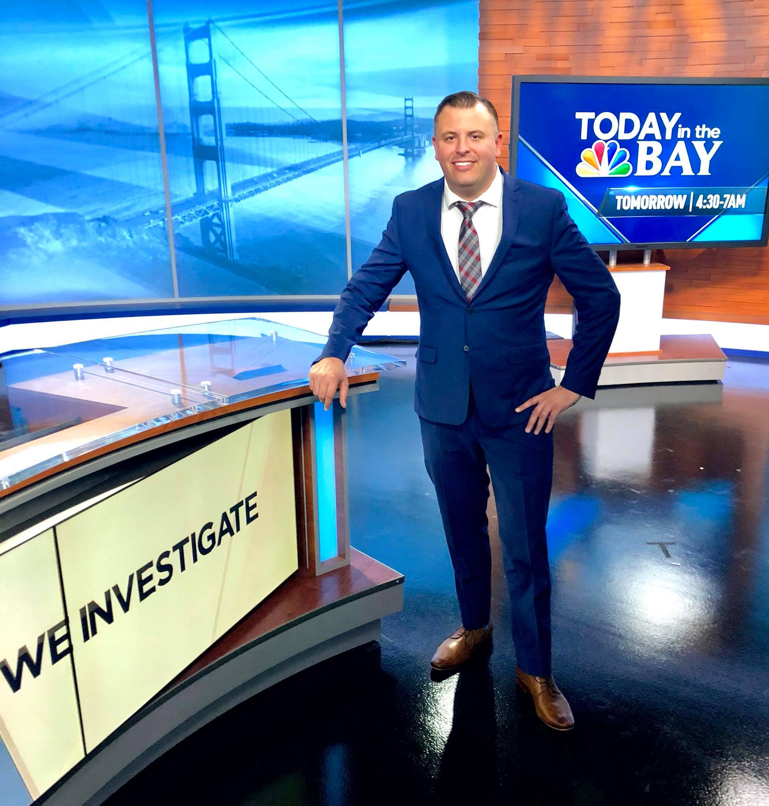
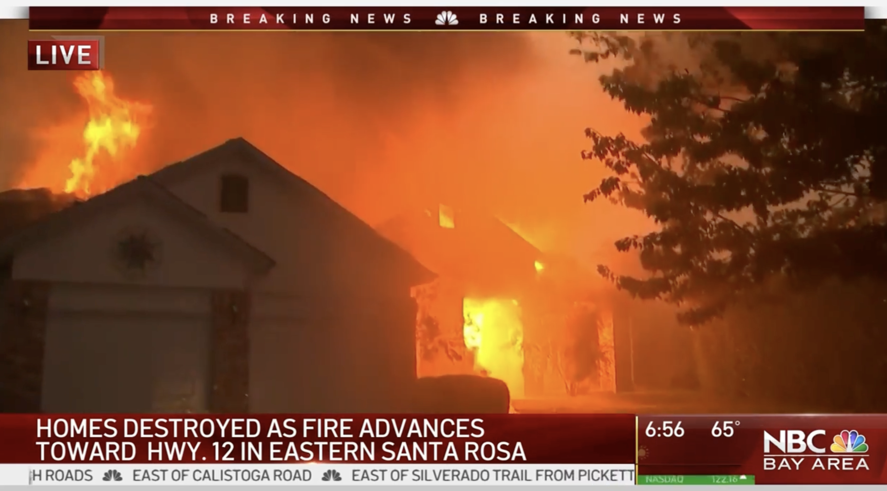
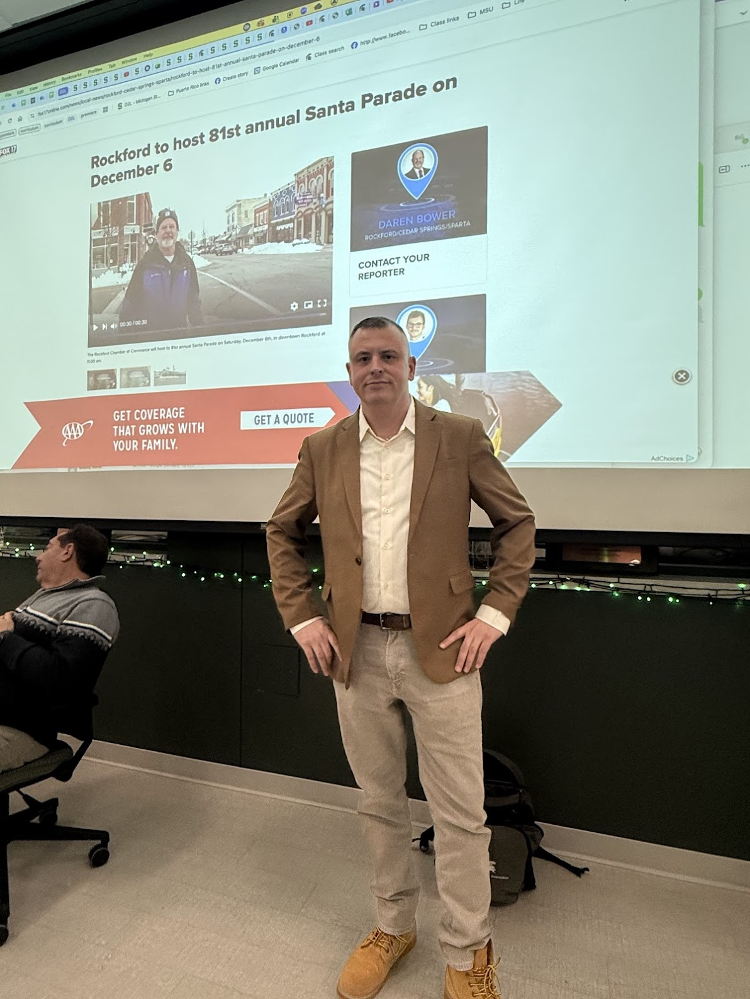

The story behind the résumé
An innovator, a dreamer, and an executor.
I am a veteran journalist who has overseen and developed multiplatform newsrooms in major, mid and small markets across the country, including California. I climbed the commercial television ranks from an internship in Grand Rapids to executive producer and assistant news director roles in top-10 and top-15 markets, and I now run a Big Ten public media newsroom serving Michigan's Capital Region and six mid-Michigan counties.
I work by the numbers. I measure success on ratings and digital analytics. I believe we have to reach audiences where they already are, go beyond the headline every single day, and move our work across every platform we own while speaking directly to the people on it.
Andrew Gillfillan
News Director, WKAR
Michigan State University
Platforms
Television, radio, digital, podcasts, OTT and newsletters, plus the audience strategy that connects them.
Distribution
Seeing the whole product and getting it into the right channels. Knowing how to get eyes on the work.
People
Empowering the people below me to lead, and harnessing their strengths so their work is what the audience sees.
Energy
High energy, self-starting, and always carrying a roadmap for what the product should become next.
How I got here
Here's my story
01
A kid obsessed with weather and information
I am a Michigan native. I grew up on a lake in West Michigan, outside Grand Rapids, obsessed with weather. I started a petition to get The Weather Channel added to our cable lineup. We got it. The lake was happy.
I also started a neighborhood newspaper, five dollars a copy, made on my mom's computer and a Xerox machine. None of this is new. I have been chasing weather, stories and community information most of my life.
02
Thrown in young, and grateful for it
I was still at Central Michigan when I started producing weekend newscasts at WLNS in Lansing. An internship at WOOD TV8 turned into a full-time job before I graduated. Overnights, eighty miles each way, then back to school in the morning.
I became WOOD's youngest assistant news director, then was promoted to WISH-TV in Indianapolis, LIN TV's flagship station at the time, where I was again the youngest ever in the job. I was young, I made a lot of mistakes, and I learned from every one of them, mostly by being put in rooms I probably had no business being in yet.
Helen Thomas used to visit her niece Suzanne Geha, our main anchor. A few of us would sit in a downtown hotel lobby while she told stories about covering the White House. Moments like that made the profession feel bigger and more serious.
03
What impact really means
For a long time I loved the urgency of news. Breaking news, severe weather, big coverage. I still do.
But helping my mom through liver disease and a transplant taught me that impact is not just a newsroom word. Systems matter. Who helps and who does not matters. The stories that make a difference are usually the ones that explain something clearly enough that people can act on it.
04
A year on the road, listening
After my mom died I spent a year on the road with my elderly golden retriever, Graham. Twenty states, from big cities to farm communities.
I saw how people consume media when they are not in a focus group. Longtime viewers talked about familiar local faces disappearing from their screens. Younger people had almost no connection to traditional news at all.
It made me want to earn that attention back without gimmicks. Around students at Michigan State I see the same challenge up close. They are the future audience and the future of the profession.
05
Immigration, first hand
I have been through the U.S. immigration process first hand: the paperwork, the waiting, the cost, the uncertainty. That experience changed how I understand immigration reporting, and the gap between policy language and what families actually live through.
After twenty-five years in newsrooms I am more convinced than ever that local journalism matters most when it helps people understand their world.
California
Nearly six years on the West Coast
I know California culture and California politics, the dynamics from the interior to the coasts. I know the immigration story, the military story and the quakes. California is also where I learned microclimates: a forecast that changes over a single ridgeline, and a market where one weather story is four different weather stories depending on which valley you live in.
I directed extended multi-platform coverage of historic California wildfires, worked the orange-sky morning of September 2020, and reimagined morning news through the pandemic as audience habits broke and re-formed.


What I bring
My gifts
I am a self-starter. I always have a plan and a roadmap in my head, and I am always looking for how to make the thing we just did better than the last one. I love journalism, I love telling stories, and I love getting people talking about them.
Seeing opportunity
I find the content and audience opportunities an organization is walking past: the story sitting unused in another department, the platform nobody thought to move it to.
Building around people's strengths
I learn what each person is genuinely good at and what makes them tick, then build the work around those strengths instead of forcing everyone through the same slot.
Making the work visible
Journalists work hard and audiences rarely see how hard. I put that labor out front: the reporting, the names, the faces behind it. And I care about the conversation a story starts, not just that it published.
Turning ideas into systems
Brainstorming is my thing, but ideas are cheap. What matters is turning the two worth keeping into a workflow, a schedule and a standard that runs without me.
I believe in treating my employees right, creating incredible working environments, and growing the underdogs in my newsroom.
Mentorship & the talent pipeline
I mentor interns for the real world
At WKAR I expanded the internship and student-contributor pipeline with daily hands-on coaching and one-on-one mentorship, and integrated Michigan State journalism students into our broadcast and digital coverage, holding editorial rigor while preparing early-career reporters for what a real newsroom expects.
I have guest lectured at Michigan State University in the TV News Producing and Reporting course: editorial judgment, rundown construction, story framing and multi-platform execution.

Download
Executive portfolioPDF ↓